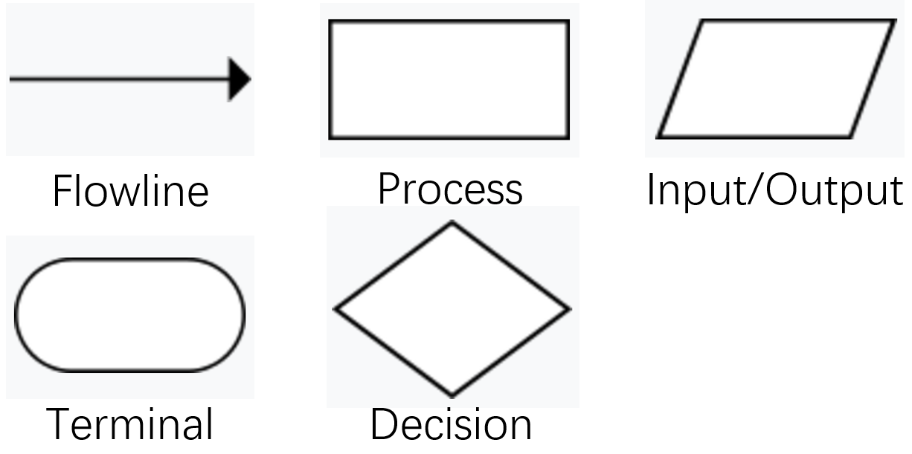
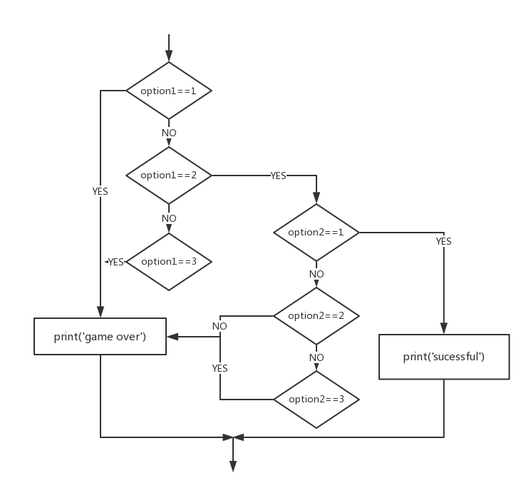

Python Programming
Lecture 2 Conditional Execution, Lists, Iteration
2.1 Boolean Expressions
- A boolean expression is an expression that is either true or false.
- Note that here we use a double equal sign $==$.
- True and False are special values that belong to the class bool; they are not strings.
>>> 5 == 5
True
>>> 5 == 6
False
>>> type(True)
bool
>>> type(False)
bool
There are other ways of comparison.
x != y # x is not equal to y
x > y # x is greater than y
x < y # x is less than y
x >= y # x is greater than or equal to y
x <= y # x is less than or equal to y
x is y # x is the same as y
x is not y # x is not the same as y
Logical operators
And
>>> True and True
True
>>> True and False
False
>>> False and False
False
>>> 5 > 3 and 3 > 1
True
Or
>>> True or True
True
>>> True or False
True
>>> False or False
False
>>> 5 > 3 or 1 > 3
True
Not
>>> not True
False
>>> not False
True
>>> not 1 > 2
True
What if I enter a number?
>>> 17 and True
True
Short-circuit evaluation
- Python evaluates the expression from left to right.
- If there are multiple expressions, Python evaluates them one by one.
- If there is nothing to be gained by evaluating the rest of a logical expression, it stops its evaluation.
>>> x = 6
>>> y = 2
>>> x >= 2 and (x/y) > 2
True
>>> x = 1
>>> y = 0
>>> x >= 2 and (x/y) > 2
False
>>> x = 6
>>> y = 0
>>> x >= 2 and (x/y) > 2
Traceback (most recent call last):
File "<stdin>", line 1, in <module>
ZeroDivisionError: division by zero
While this may seem like a fine point, the short-circuit behavior leads to a clever technique called the guardian pattern.
>>> x = 1
>>> y = 0
>>> x >= 2 and y!= 0 and (x/y) > 2
False
>>> x = 6
>>> y = 0
>>> x >= 2 and y!= 0 and (x/y) > 2 #y!= 0 acts as a guard.
False
>>> x >= 2 and (x/y) > 2 and y != 0
Traceback (most recent call last):
File "<stdin>", line 1, in <module>
ZeroDivisionError: division by zero
2.2 Conditional Execution
- If statement

x=10
if x > 0 :
print('x is positive') #The indent
The boolean expression after the if statement is called the condition.
We end the if statement with a colon character :
If the logical condition is true, then the indented statement gets executed.
-
There is no limit on the number of statements, but there must be at least one.
-
If there is no statement, you can use pass statement, which does nothing.
if x < 0 :
pass # need to handle negative values!
- Alternative Execution
x=10
if x%2 == 0 :
print('x is even')
else :
print('x is odd')
- Chained Conditionals
x=5
y=10
if x < y:
print('x is less than y')
elif x > y:
print('x is greater than y')
else:
print('x and y are equal')
elif is an abbreviation of “else if.”
No limit on the number of elif statements. If there is an else clause, it has to be at the end, but there does not have to be one.
Each condition is checked in order. If the first is false, the next is checked. If one of them is true, then it executes, and the statement ends.
- Nested Conditionals
if x == y:
print('x and y are equal')
else:
if x < y:
print('x is less than y')
else:
print('x is greater than y')
Nested conditionals are difficult to read. In general, it is a good idea to avoid them when you can.
- Try and Except
inp = input('Enter Fahrenheit Temperature: ')
fahr = float(inp)
cel = (fahr - 32.0) * 5.0 / 9.0
print(cel)
Enter Fahrenheit Temperature:72
22.22222222222222
Enter Fahrenheit Temperature:fred
Traceback (most recent call last):
File "fahren.py", line 2, in
fahr = float(inp)
ValueError: could not convert string to float: 'fred'
- The idea of try and except is that you know that some sequence of instruction(s) may have a problem and you want to add some statements to be executed if an error occurs. These extra statements (the except block) are ignored if there is no error.
inp = input('Enter Fahrenheit Temperature:')
try:
fahr = float(inp)
cel = (fahr - 32.0) * 5.0 / 9.0
print(cel)
except:
print('Please enter a number')
Enter Fahrenheit Temperature:72
22.22222222222222
Enter Fahrenheit Temperature:fred
Please enter a number
2.3 Flow Chart
- A flowchart is a type of diagram that represents an algorithm, workflow or process, showing the steps as boxes of various kinds, and their order by connecting them with arrows.

- Office Visio, ProcessOn
- Example: A Simple Game
- What are the key elements of a game?
- Making a choice and feedback.

2.4 Lists (1)
- A list is a sequence of values.
[10, 20, 30, 40]
['crunchy frog', 'ram bladder', 'lark vomit']
['spam', 2.0, 5, [10, 20]]
- A list that contains no elements is called an empty list; you can create one with empty brackets, [].
>>> cheeses = ['Cheddar', 'Edam', 'Gouda']
>>> numbers = [17, 123]
>>> empty = [] #[] is false
>>> print(cheeses, numbers, empty)
['Cheddar', 'Edam', 'Gouda'] [17, 123] []
Lists are ordered collections, so you can access any element in a list by telling Python the position, or index, of the item desired.
- Python considers the first item in a list to be at position 0, not position 1.
>>> cheeses = ['Cheddar', 'Edam', 'Gouda']
>>> print(cheeses[0])
Cheddar
-
When we ask for a single item from a list, Python returns just that element without square brackets or quotation marks.
-
By asking for the item at index -1, Python always returns the last item in the list:
>>> cheeses = ['Cheddar', 'Edam', 'Gouda']
>>> print(cheeses[-1])
Gouda
>>> print(cheeses[-2])
Edam
- You can change the order of items in a list or reassign an item in a list.
>>> numbers = [17, 123]
>>> numbers[1] = 5
>>> print(numbers)
[17, 5]
List operations
- The + operator concatenates lists:
>>> a = [1, 2, 3]
>>> b = [4, 5, 6]
>>> c = a + b
>>> print(c)
[1, 2, 3, 4, 5, 6]
>>> [0] * 4
[0, 0, 0, 0]
>>> [1, 2, 3] * 3
[1, 2, 3, 1, 2, 3, 1, 2, 3]
List slices
>>> t = ['a', 'b', 'c', 'd', 'e', 'f']
>>> t[1:3]
['b', 'c']
>>> t[:4]
['a', 'b', 'c', 'd']
>>> t[3:]
['d', 'e', 'f']
- The first slice starts at 1, and ends at 2. The slice does not contain the 3rd element.
>>> t[:]
['a', 'b', 'c', 'd', 'e', 'f']
>>> t = ['a', 'b', 'c', 'd', 'e', 'f']
>>> t[1:3] = ['x', 'y']
>>> print(t)
['a', 'x', 'y', 'd', 'e', 'f']
2.5 Lists (2): Adding and Deleting Elements
append adds a new element to the end of a list:
extend takes a list as an argument and appends all of the elements:
insert adds a new element at any position in your list
>>> t = ['a', 'b', 'c']
>>> t.append('d')
>>> print(t)
['a', 'b', 'c', 'd']
>>> t1 = ['a', 'b', 'c']
>>> t2 = ['d', 'e']
>>> t1.extend(t2)
>>> print(t1)
['a', 'b', 'c', 'd', 'e']
>>> t = ['a', 'b', 'c']
>>> t.insert(1, 'd')
>>> print(t)
['a', 'd', 'b', 'c']
Deleting elements
There are several ways to delete elements from a list. If you know the index of the element you want, you can use pop
>>> t = ['a', 'b', 'c']
>>> x = t.pop(1)
>>> print(t)
['a', 'c']
>>> print(x)
b
pop modifies the list and returns the element that was removed. If you don’t provide an index, it deletes and returns the last element.
>>> t = ['a', 'b', 'c']
>>> x = t.pop()
>>> print(t)
['a', 'b']
>>> print(x)
c
If you don’t need the removed value, you can use the del operator
>>> t = ['a', 'b', 'c']
>>> del t[1]
>>> print(t)
['a', 'c']
>>> t = ['a', 'b', 'c', 'd', 'e', 'f']
>>> del t[1:5]
>>> print(t)
['a', 'f']
If you know the element you want to remove (but not the index), you can use remove
>>> t = ['a', 'b', 'c']
>>> t.remove('b')
>>> print(t)
['a', 'c']
The return value from remove is None. But, you can assign the element which you want to remove to a variable so that you can use it next time.
There is a possibility that the value appears more than once in the list, but the remove() method deletes only the first occurrence.
2.6 Lists (3): Organizing a list
sort arranges the elements of the list from low to high:
>>> t = ['d', 'c', 'e', 'b', 'a']
>>> t.sort()
>>> print(t)
['a', 'b', 'c', 'd', 'e']
>>> t = ['d', 'c', 'e', 'b', 'a']
>>> t.sort(reverse=True)
>>> print(t)
['e', 'd', 'c', 'b', 'a']
Most list methods are void; they modify the list and return None.
.upper(), .lower(), .title(), .lstrip(), .rstrip(), .strip() return strings.
-
The order of the list is permanently changed
-
To maintain the original order of a list but present it in a sorted order, you can use the sorted() function.
>>> t = ['d', 'c', 'e', 'b', 'a']
>>> print(sorted(t))
['a', 'b', 'c', 'd', 'e']
>>> print(t)
['d', 'c', 'e', 'b', 'a']
>>> t = ['d', 'c', 'e', 'b', 'a']
>>> t=sorted(t)
>>> print(t)
['a', 'b', 'c', 'd', 'e']
- Method and function?
To reverse the original order of a list, you can use the reverse() method.
>>> t = ['d', 'c', 'e', 'b', 'a']
>>> t.reverse()
>>> print(t)
['a', 'b', 'e', 'c', 'd']
-
The reverse() method changes the order of a list permanently, but you can revert to the original order anytime by applying reverse() to the same list a second time.
-
You can quickly find the length of a list by using the len() function.
>>> s = ['python', 'java', ['asp', 'php'], 'scheme']
>>> len(s)
4
>>> L = []
>>> len(L)
0
>>> s = [3, 8, 10, 7]
>>> sum(s)
28
>>> min(s)
3
>>> max(s)
10
>>> x = ['banana', 'jack', 'jessica']
>>> min(x)
banana
>>> max(x)
jessica
>>> sum(x)
Traceback (most recent call last):
File "", line 1, in
sum(x)
TypeError: unsupported operand type(s) for +: 'int' and 'str'
Lists: Summary
-
The element can be number, string, list, and empty [].
-
Features: Ordered, Mutable, Repeatable
-
The indices start at 0. Index -1 means the last item.
-
The item can be changed by reassign a new item. Two lists can be added together. list slice :
-
.append(), .extend(), .insert()
.pop(), del, .remove()
.sort(), sorted(), .reverse(), len(), sum(), max(), min()
-
We will talk more about lists at another time.
2.7 Iteration (1)
1+2+3+...+100=?
The while statement
n = 5
while n > 0:
print(n)
n = n - 1
print('Blastoff!')
Evaluate the condition, yielding True or False.
If the condition is false, exit the while statement and continue execution at the next statement.
If the condition is true, execute the body and then go back to step 1.
-
This type of flow is called a loop because the third step loops back around to the top.
-
We call each time we execute the body of the loop an iteration.
The body of the loop should change the value of one or more variables so that eventually the condition becomes false and the loop terminates.
If the loop repeats forever, it results in an infinite loop.
n = 10
while True:
print(n, end=' ')
n = n - 1
print('Done!')
-
What will happen if you run this?
Finishing iterations with break
while True:
line = input('>')
if line == 'done':
break
print(line)
print('Done!')
Finishing iterations with continue
while True:
line = input('> ')
if line[0] == '#':
continue
if line == 'done':
break
print(line)
print('Done!')
Definite loops using for
-
for statement works on the lists.
friends = ['Joseph', 'Glenn', 'Sally']
for friend in friends: #You can use any other variable name other than friend.
print('Happy New Year:', friend)
print('Done!')
Happy New Year: Joseph
Happy New Year: Glenn
Happy New Year: Sally
Done!
-
We call the while statement an indefinite loop because it simply loops until some condition becomes False, whereas the for loop is looping through a known set of items so it runs through as many iterations as there are items in the set.
-
In particular, friend is the iteration variable for the for loop. The variable friend changes for each iteration of the loop and controls when the for loop completes. The iteration variable steps successively through the three strings stored in the friends variable.
Loop patterns
These loops are generally constructed by:- Initializing one or more variables before the loop starts
- Performing some computation on each item in the loop body, possibly changing the variables in the body of the loop
- Looking at the resulting variables when the loop completes
Counting and summing loops
count = 0
for itervar in [3, 41, 12, 9, 74, 15]:
count = count + 1
print('Count: ', count)
-
There is anther way we have learned.
-
Our iteration variable is named itervar and while we do not use itervar in the loop, it does control the loop and cause the loop body to be executed once for each of the values in the list.
-
Another similar loop that computes the total of a set of numbers is as follows
total = 0
for itervar in [3, 41, 12, 9, 74, 15]:
total = total + itervar
print('Total: ', total)
-
Another way of computing the summation?
-
Maximum and minimum loops
largest = None
print('Before:', largest)
for itervar in [3, 41, 12, 9, 74, 15]:
if largest is None or itervar > largest :
largest = itervar
print('Loop:', itervar, largest)
print('Largest:', largest)
Before: None
Loop: 3 3
Loop: 41 41
Loop: 12 41
Loop: 9 41
Loop: 74 74
Loop: 15 74
Largest: 74
-
Another way of finding the maximum?
-
With a similar method, we can find the minimum by using loops.
2.8 Iteration (2)
-
The concept of looping is important because it’s one of the most common ways a computer automates repetitive tasks.
-
The indentation errors are common.
-
Python uses indentation to determine when one line of code is connected to the line above it. Some languages require the "end" statement.
-
Always indent the line after the for statement in a loop.
friends = ['Joseph', 'Glenn', 'Sally']
for friend in friends: #You can use any other variable name other than friend.
print('Happy New Year:', friend)
print('Done!')
File "C:/Users/Administrator/Desktop/PYTHON/infinite.py", line 9
print('Happy New Year:', friend)
^
IndentationError: expected an indented block
-
Forgetting to indent additional lines
friends = ['Joseph', 'Glenn', 'Sally']
for friend in friends:
print('Happy New Year:', friend)
print('Looking forward to seeing you,', friend)
Happy New Year: Joseph
Happy New Year: Glenn
Happy New Year: Sally
Looking forward to seeing you, Sally
-
This is a logical error.
-
Indenting unnecessarily
message = "Hello Python world!"
print(message)
File "C:/Users/Administrator/Desktop/PYTHON/infinite.py", line 8
print(message)
^
IndentationError: unexpected indent
-
Indenting unnecessarily after the loop
friends = ['Joseph', 'Glenn', 'Sally']
for friend in friends:
print('Happy New Year:', friend)
print('Looking forward to seeing you!')
Happy New Year: Joseph
Looking forward to seeing you!
Happy New Year: Glenn
Looking forward to seeing you!
Happy New Year: Sally
Looking forward to seeing you!
-
Now we answer the question. How to calculate 1+2+...+100?
-
First, we need to generate a series of numbers in a list.
for value in range(1,5):
print(value)
1
2
3
4
type(range(1,5))
range
numbers = list(range(1,6))
print(numbers)
[1, 2, 3, 4, 5]
total=0
for value in range(1,101):
total=value+total
print(total)
-
Make a list of even numbers
even_numbers = list(range(2,11,2))
print(even_numbers)
[2, 4, 6, 8, 10]
squares = []
for value in range(1,11):
square = value**2
squares.append(square)
print(squares)
[1, 4, 9, 16, 25, 36, 49, 64, 81, 100]
Summary
- Boolean Expressions
- Conditional Execution, Flow Chart, Example
- Lists, Iteration
- Reading: Chapter 3, 8.1-8.7, 5
- Problem Set 1